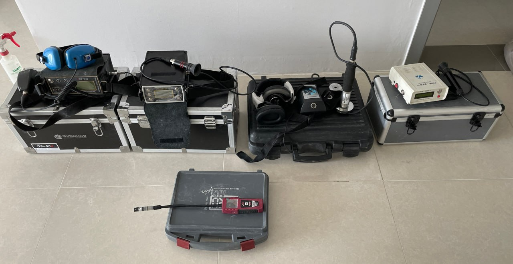

왜 마르다누수탐지인가?
15년 이상의 현장 경험과 체계적 진단 시스템으로 누수 문제를 근본적으로 해결합니다.
정밀 탐지 장비
열화상 카메라, 배관 내시경, 음향 탐지기 등 최신 장비를 활용하여 눈에 보이지 않는 누수 지점까지 정확하게 찾아냅니다.
비파괴 검사 기술
벽이나 바닥을 뜯지 않고도 누수 위치를 파악합니다. 건물 손상을 최소화하여 추가 수리 비용을 절감합니다.
원스톱 서비스
누수 탐지부터 배관 수리, 방수 공사, 보험청구 자료 준비까지 한 곳에서 모든 것을 해결합니다.
98%
누수 탐지 성공률
24시간
평균 현장 방문 소요
3년
방수 시공 품질 보증
0원
탐지 실패 시 비용
전문 탐지 장비
최신 장비를 보유하여 어떤 유형의 누수도 정확하게 찾아냅니다.

열화상 카메라
온도 차이로 배관 속 물의 흐름과 누수 위치를 시각적으로 확인합니다.

음향 탐지기
배관 내부의 소리를 증폭하여 누수 소음이 발생하는 정확한 지점을 찾습니다.

배관 내시경
배관 내부에 직접 카메라를 삽입하여 부식, 균열, 막힘 상태를 실시간 확인합니다.

압력 테스트 장비
배관에 압력을 가해 미세한 누수까지 감지합니다. 급수관과 난방관 모두 대응 가능합니다.